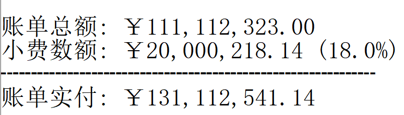
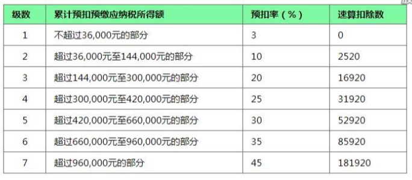

任务和作业
1
将今天的内容整理为笔记。
用心整理，不是单纯的拷贝。
2
!!!假期作业!!!:
- 敲代码
- 写一份学习计划
学习计划的结构:
- 再回首。回忆并总结从开学到现在的时间，自己在学校里做了些啥。 有多少时间用在吃饭，多少用在睡觉，多少用在游戏，多少用在看视频，多少用在学习上 (100)
- 忆苦。从上面的总结中，总结自己存在的不足，并进行反思应该怎么去修正并提升 (100)
- 初心。自己选择 IT 行业的初心，还有选择 .NET 方向的想法。陈述自己对未来的职业或事业的规划是什么 (150)
- 思甜。制定一下返校之后，自己的学习计划 (此处要求，至少 300 字)
3
- 敲代码
- 总结: 组合 vs 继承
4
- 敲代码，敲代码，敲代码
- 回到原来的问题: 到底用组合，还是用继承？有没有第三条路？
5
- 组合，练熟
- 继承，实现
- 对组合和继承进行总结
6
- 将雷同的 ExportToExcel 通过某种方法继续 DRY
- 敲代码，并总结组合和继承两种方法的用法和不同
7
- 敲代码
- 如何将分离的诸方法，让各个类都能使用。请给予实现
8
敲代码.
9
- 敲代码，掌握怎么导出数据到 Excel (使用 NPOI)
- 优化 ExportToExcel 方法:
- 如果指定的 excel 文件不存在，创建一个新的，并按格式写入
- 如果指定的 excel 文件存在，那么将计算的数据 追加 到最后一行
小结:
- 周末作业，周一检查，只有 8 个人完成！
- 给了两节课补，第三节上课检查，有 13 个完成，还剩 17 个没完成!
10
实现 ExportToExcel 方法。
小结:
- …………………….
11
- 敲今天的代码，敲到熟。务必做到能够独立
默写出来的程度 - 在敲代码的时候，务必要有总结! 书面总结，也就是 笔记!
检查并默写，组长检查的情况:
- 第一组:
- 只有 1 个算勉强完成
- 有的人没有逻辑，有的人单词写错
- 第二组:
- 2 个人不合格
- 有一个对方法的概念不理解，有的逻辑不通。散漫
- 第三组:
- 2 个人勉强完成
- 没有完全理解，没有用心。要监督多打多练
- 第四组:
- 基本都完成了，有的单词错误
- 有的比较生疏。要熟能生巧
- 第五组:
- 2 个人勉强完成
- 单纯记代码，感觉没有一点逻辑
- 第六组:
- 2 个未完成
- 不愿意敲代码，愿意背代码。只想完任务。心态问题
12
完成 ElectricBillCalc 中杀马特版本的 Print:
- 1: 红色
- 2: 绿色
- 3: 黄色
- q: 或 esc 退出
- 回车: 每秒变一种颜色，适当增加声音效果 (beep)
- 其他: 原来的颜色
在完成任务的过程中，体会 怎么去调用别人已经封装好的类和方法。
13
- 敲代码
- 敲代码
- 敲代码
- 班委和组长做好监管，谢谢
14
继续完成任务:
- 将小费计算器的代码，重构为合理的类的结构
- 实现阶梯电费计算。至少要用两种方式 (参照个税计算的第一个和最后一个版本)
小结:
- 第一题，表面上都完成了。实质让人在讲台上敲出来，还是搞不定
- 第二题，表面上就两三个人未完成
第一题，就 20 行代码而已!
15
- 敲代码，理解 constructor 和 static
- 区分 readonly 和 const 使用
- 将小费计算器的代码，重构为合理的类的结构
- 实现阶梯电费计算。至少要用两种方式 (参照个税计算的第一个和最后一个版本)
小结:
- 第三题，小费计算，25 号开始安排，至今天有蔡桂德、陈柏炜、韦档未完成
- 最后一题，电费计算，19 号开始安排，至今天只有 14 人完成
16
- 敲代码，至少一遍，理解属性和数据封装的含义
- 敲代码，至少一遍，理解属性和数据封装的含义
- 将小费计算器的代码，重构为合理的类的结构
- 实现阶梯电费计算。至少要用两种方式 (参照个税计算的第一个和最后一个版本)
PS:
- 至少一遍的意思是，你如果没搞懂，不介意多敲几遍、十几遍、几十遍
- 不要抱怨自己搞不懂，你的努力程度还没到有资格否认自己天赋的时候
17
- 手动将懒加载和非懒加载的两种实现代码都敲一遍，并仔细比较、消化、理解
- 书面总结一下懒和勤分别有什么好处和坏处 (技术结合生活)
- 预习微软的属性糖并尝试将代码改写
18
- 亲手 敲今天上课的代码，至少 一遍
- 思考并实现将代码中的冗余 CalculateTax 给精简掉
- 自己总结一下，如何才能进行有效的封装
19
TaxCal tc1 = new TaxCal(); tc1.Money = 8000; tc1.PrintToConsole(); tc1.ExportToExcel(); // 修改代码，使得下面第一句不能够执行，但第二句能执行 // 也就是，可以从 tc1 中返回 Money 对应的税收和税率 // 如果 Tax 是 public 的话，那么从外部能 read 又能 write // 如果 Tax 是 private 的话，那么从外部不能 read 又不能 write // 我们需要一种方式，从外部只能 read 不能 write，如何实现? tc1.Tax = 3333; Console.WriteLine("{0}", tc1.Tax);
小结:
- 只有大约 7 个人号称完成了
- 大约有 10 个人据说连题目都没搞懂
- 最终，花了两节课分析题目本身
20
首先，敲代码并理解对象的使用。
其次，电费计算 (题目描述由第 5 小组提供):
题目：写一个控制台小程序，能指定计算某月的用电费， 如果输入的用电量和月份为空或者不是数字，提示用户出错 夏季5-10月： 第一档电量：每户每月0-260度，电价不作调整； 第二档电量：每户每月261-600度，电价每度加价0.05元； 第三档电量：每户每月601度及以上，电价每度加价0.30元； 非夏季1-4月、11-12月： 第一档电量：每户每月0-200度，电价不作调整； 第二档电量：每户每月201-400度，电价每度加价0.05元； 第三档电量：每户每月401度及以上，电价每度加价0.30元； 计算公式： 总电费=第一档电费+第二档电费+第三档电费 第一档电费 = 第一档标准以内的电量 x 第一档电价 第二档电费 = 超出第一档标准并且在第二档标准以内的电量 x 第二档电价 第三档电费 = 超出第二档标准的电量 x 第三档电价 用电分类： 第一档 0.600 第二档 0.650 第三档 0.900 输出参考： 5月份用电量650KWh 第一档电费: $174.20 第二档电费: $244.80 第三档电费: $48.50 ------------------------------------ 总计: $467.50
小结:
- 第一题，吴志柳、韦档没敲，理由是不知道要敲，惩罚其组长抄写代码 3 遍
- 第二题，虽然这道题目没强制要求，但是有 21 个完成，很不错，继续保持
21
- 书面总结一下，将代码块提取为单独的方法，有哪些好处和坏处 (多多益善)
- 完成今天的代码，明天检查。请组长做好监督 (类与对象)
- 调研电费的计算方式。第五组请做好方案准备
小结:
- 陈柏炜抄代码没完成，韩雷明偷工减料
- 方法提取的总结，都完成了
22
作业:
- 练习今天的代码。组长做好监督，落实每个人动手实践
- 调研电费的计算方式。明天请第五组给出具体计算方案
小结:
- 2021年3月18日检查，有下列人员未完成代码的敲写:
- 第三组: 陈柏炜
- 第四组: 冯瑞芮
- 第五组: 韩雷明
- 第六组: 蔡桂德
- 上述未敲代码者，于当天手动抄写 4 遍，其组长抄 1 遍
计算阶梯电费:
以广东省为例按照每户每月电量分档划分为夏季标准和非夏季标准。其中： （1）夏季标准（5月－10月）： 第一档电量为每户每月0－260度的用电量，其电价不作调整； 第二档电量为每户每月261－600度的用电量，其电价每度加价0.05元； 第三档电量为每户每月601度及以上的用电量，其电价每度加价0.30元。 （2）非夏季标准（1-4月、11-12月）： 第一档电量为每户每月0－200度的用电量，其电价不作调整； 第二档电量为每户每月201－400度的用电量，其电价每度加价0.05元； 第三档电量为每户每月401度及以上的用电量，其电价每度加价0.30元。 计算公式： 总电费＝第一档电费+第二档电费+第三档电费 第一档电费=第一档标准以内的电量×第一档电价 第二档电费=超出第一档标准并且在第二档标准以内的电量×（第一档电价+0.05元/度） 第三档电费=超出第二档标准的电量×（第一档电价+0.3元/度）计算。 但由于不同地市的电价不同，具体的电价执行标准您可关注“南方电网95598”公众平台，点击服务咨询> 电价信息选择用电区域的城市>查看详细电价表，即可查询到电价信息了。
参考:
23
写一个小程序，计算工资的税后收入。要求:
CMD 下面输入
程序.exe 税前收入，将输出扣税情况和实际税后收入。参考输出: 个人所得税的计算，暂时按照下列简化的方案:
(0, 5k] 0 (5k, 1w] 3% (1w, 2w] 5% (2w, 10w] 20% (10w, ∞] 45% - 如果输入的税前收入为空或者不是数字，提示用户出错
补充说明:
- 写程序要遵循 多模仿、多动手 的原则
- 书读百遍其义自见，代码也是一样，多敲自然熟练
- 后续，需要将程序改为使用真正的个税计算方式:
- 个税计算器: https://gerensuodeshui.cn/
- 个税计算方式: http://jcc.bjmu.edu.cn/docs/20190227173119070720.pdf
个人所得税税率表:

小结:
- 2021年3月11日，布置作业
- 2021年3月15日，第一节检查，只有 11 个人完成
- 2021年3月16日，第一节检查，还有 8 个人 未完成
- 2021年3月17日，良辰吉日，都做完了!
24
熟悉 VS2019，尝试创建各种类型的项目:
- 控制台应用 for .NET Framework (Console)
- 控制台应用 for .NET Core (Console)
- 窗体应用 (WinForm)
- 桌面应用程序 (WPF)
- Web 应用 (MVC)
25
采集 C# 和 dotnet 相关的招聘信息，了解企业需求，做好学习准备。
作业要求:
- 分别在招聘网站采集广州、深圳、珠海，每个地方 10 条相关的招聘信息
- 将上述招聘信息，汇总到 txt/markdown 文档
- 基于上述数据，进行归纳和总结
提交要求:
- 完成后，提交给自己组长
- 组长做好审核，如果有完成不佳者，督促其进行改进
- 组长收集完成后，将所有本组作业压缩后，发送到 2132579340@qq.com 邮箱
第一次检查:
- 总共有 10 个人未完成
- 方案: 课堂时间，继续完成
最终:
- 花了课堂上的两节课时间才全部完成
- 结论: 执行力差，主动性差，急需改善